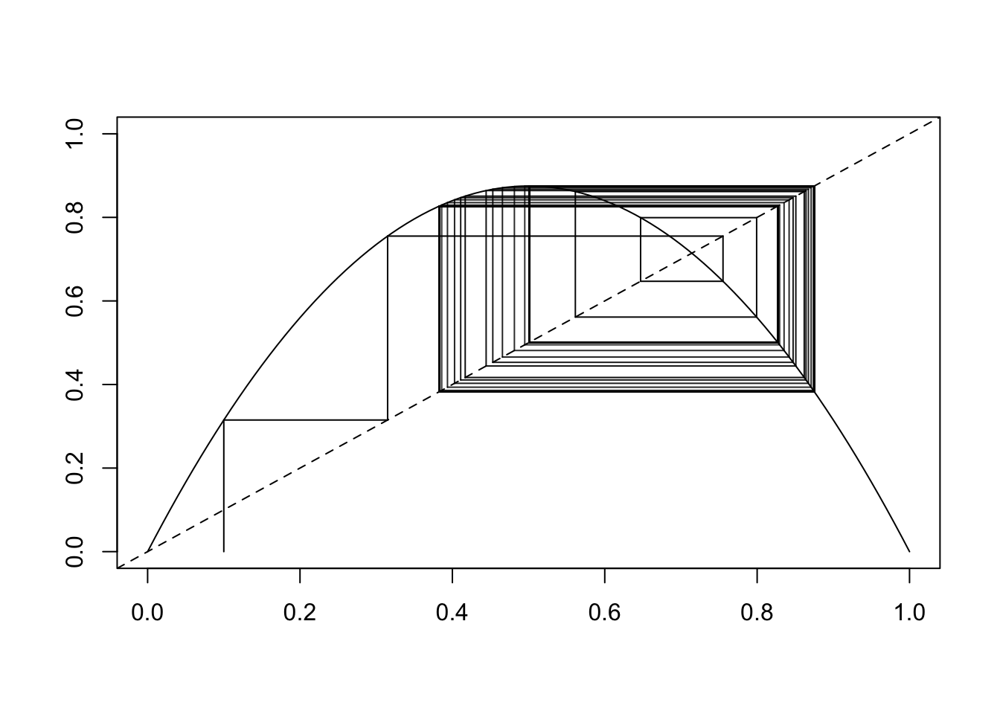
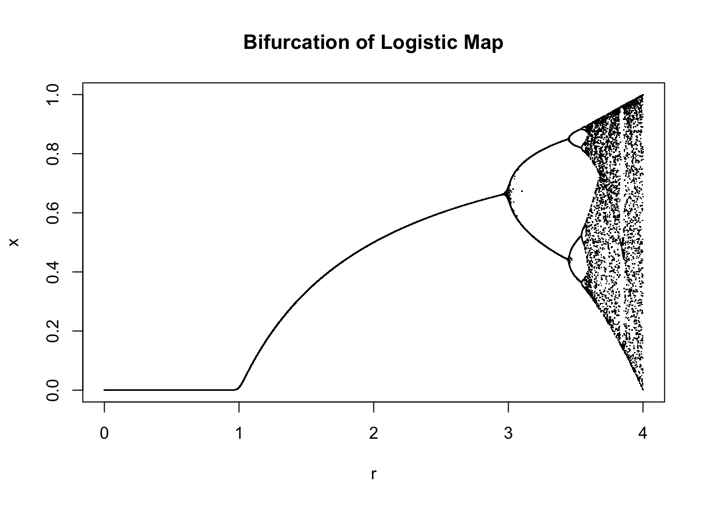
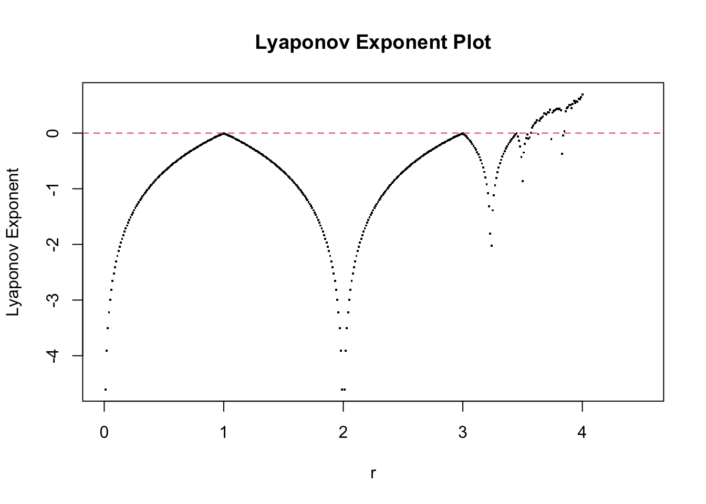

Code
library(purrr)
library(scales)
Attaching package: 'scales'The following object is masked from 'package:purrr':
discardlibrary(purrr)
library(scales)
Attaching package: 'scales'The following object is masked from 'package:purrr':
discardGenerally measures the overall sensitivity to initial conditions. Suppose we start two trajectories, x and y and let \delta(0) = x(0)y(0)
logistic_map <- function(x0, n, r) {
x <- vector(mode = "numeric", length = n + 1)
x[1] <- x0
logistic <- function(x) r * x*(1 - x)
for (i in 1:n) {
x[i+1] <- logistic(x[i])
}
# lya only if n > 200
lya <- ifelse(n > 200,
mean(log(abs(r - 2 * r * x[100:length(x)]))),
NA)
structure(list(x = x, lya = lya, n = n, r = r),
class = "chaos")
}
x <- logistic_map(.1, 500, 3.5)
plot.chaos <- function(chaos_obj) {
x <- chaos_obj$x
r <- chaos_obj$r
plot(c(0, 1), c(0, 1), type = "n",
xlab = "",
ylab = "")
abline(a = 0, b = 1, lty = 2)
y <- seq(0,1, .01)
lines(y, r * y * (1 - y))
segments(x[1], 0, x[1], x[2])
segments(x[1], x[2], x[2], x[2])
s <- seq(2, length(x) - 2)
alphas <- exp(seq(0, -5, length.out = length(s)))
segments(x[s], x[s], x[s], x[s+1], col = alpha("black", alpha = alphas))
segments(x[s], x[s+1], x[s+1], x[s+1], col = alpha("black", alpha = alphas))
}
plot(x)
rs <- seq(0, 4, .0001)
xn <- rs |> map_dbl(~logistic_map(runif(1, .1, .9), 100, .x)$x[101])
plot(rs, xn, pch = ".", xlab = "r", ylab = "x", main = "Bifurcation of Logistic Map")
We’ll try to look at the Lyaponov plot here.
rs <- seq(0, 4.5, .01)
lyas <- rs |> map_dbl(~logistic_map(.1, 500, .x)$lya)
plot(rs, lyas, pch = ".", cex = 2, main = "Lyaponov Exponent Plot",xlab = "r", ylab = "Lyaponov Exponent")
abline(h = 0, col = 2, lty = 2)